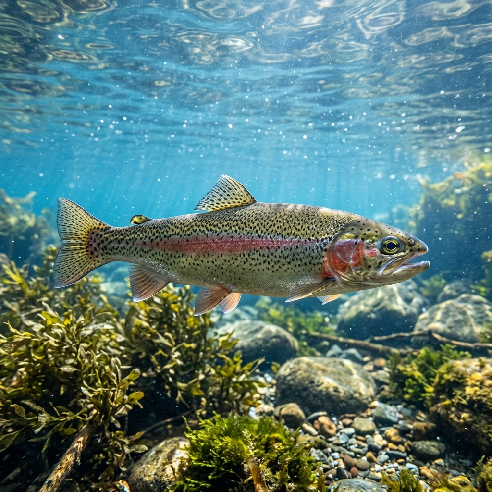
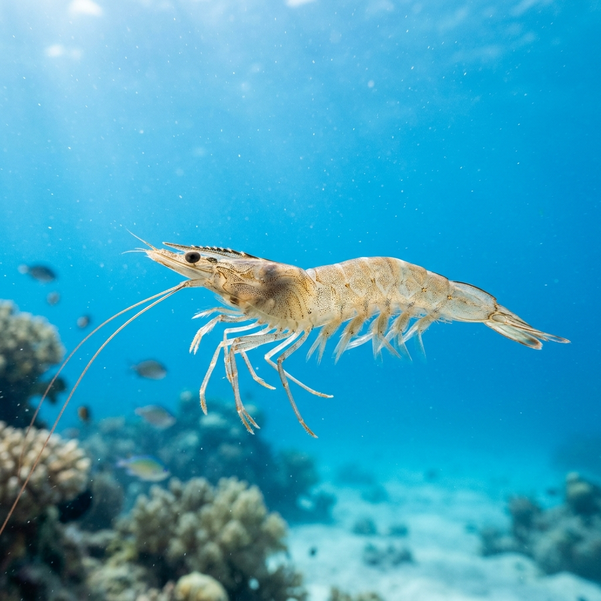
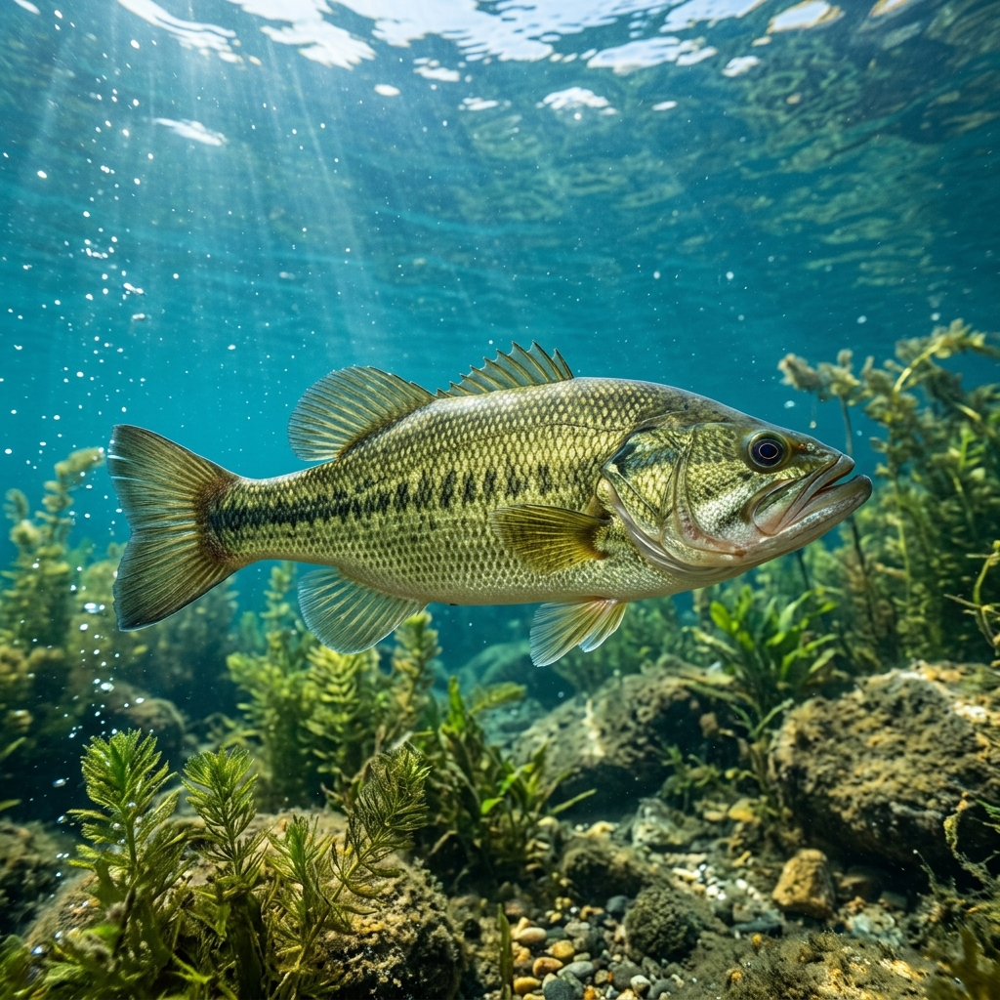
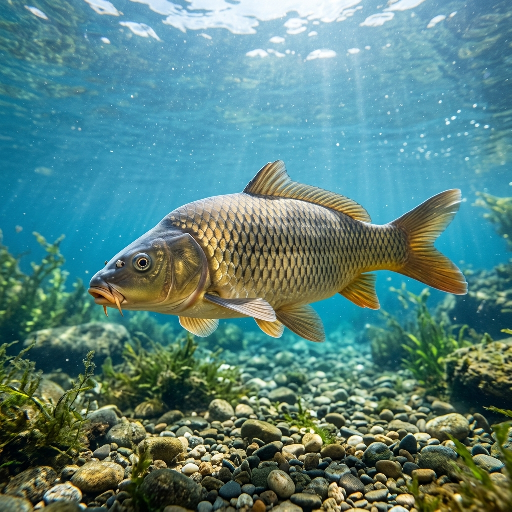

Freshwater Fish
High-yield species like Tilapia and Carp cultivated in our closed-loop RAS.
Freshwater Details
- Water Type Freshwater
- Growth Fast (6-8m)
- Diet Plant-based
- Yield Rate

Marine Fish
Premium ocean species such as Atlantic Salmon and Seabass in smart-pens.
Marine Details
- Water Type Saltwater
- Growth Moderate (12m+)
- Diet Marine feed
- Yield Rate

Shrimp
Vannamei and Tiger prawns farmed in highly biosecure biofloc systems.
Shrimp Details
- Water Type Brackish
- Growth Very Fast (3-4m)
- Diet Biofloc & pellets
- Yield Rate

Crab
Mud crabs grown in individual compartmentalized tech-boxes.
Crab Details
- Water Type Estuarine
- Growth Moderate (6-10m)
- Diet Mollusks
- Yield Rate

Shellfish
Oysters and mussels acting as natural bio-filters in IMTA setups.
Shellfish Details
- Water Type Marine
- Growth Slow (18m+)
- Diet Phytoplankton
- Yield Rate

Ornamental Fish
Vibrant Koi and marine ornamentals bred using precise genetic selection.
Ornamental Details
- Water Type Varies
- Growth Variable
- Diet Color-enhancing
- Market Value